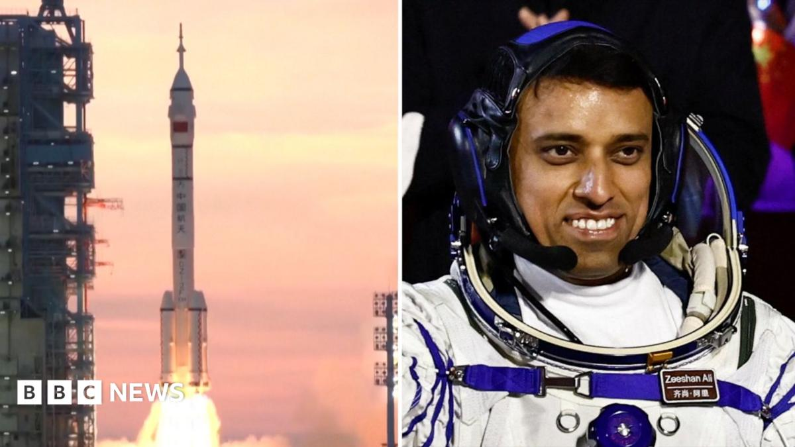

Science · 25 Nov 2026
China launches Shenzhou 24 spacecraft carrying 2 Chinese and 1 Pakistani astronaut

China on Wednesday launched the Shenzhou 24 spacecraft with three astronauts—two Chinese and a Pakistani—sending the first foreign crew member to its space station.
Multiple independent publishers are reporting on the same development: China launches Shenzhou 24 spacecraft carrying 2 Chinese and 1 Pakistani astronaut.
The available reports place the development in the Science category. The accounts were compared for agreement on the central event rather than simply shared names or broad topics.
One of the available reports describes the development this way: China on Wednesday launched the Shenzhou 24 spacecraft with three astronauts—two Chinese and a Pakistani—sending the first foreign crew member to its space station.
Readers should consult the linked source reports for additional context, updates and details that may change as the story develops.
Sources
This article was produced by the C. O. Eric AI Newsroom from the cited sources. It is published only after automated evidence and safety checks.